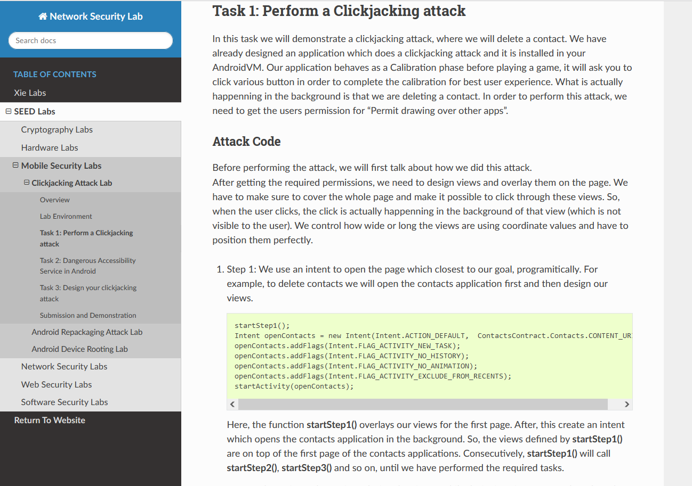
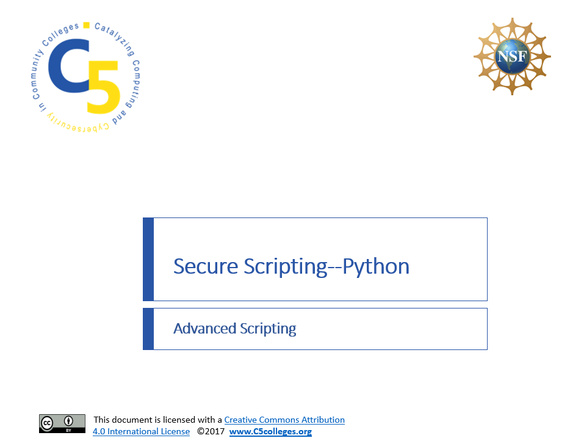

Skills
Core
- Web Application Testing
- API Testing
- Infrastructure Testing
- Vulnerability Management
- DAST/SAST Methodology
- Static Code Analysis
- Manual Vulnerability Testing
Technical
- Burp Suite
- Fortify SAST
- OWASP Top 10
- Vulnerability Scanning
- Scripting & Automation
- Service Enumeration
- Linux & Shell Proficiency
Operational
- Vulnerability Validation
- Proof-of-Concept Development
- Attack Surface Enumeration
- OWASP WSTG
- Vulnerability Disclosure Programs
- Security Control Assessment
- Phishing Simulation
Certifications

Offensive Security Certified Professional+ (OSCP+)

CompTIA Security+ ce
Education
 University of Tennessee at Chattanooga
University of Tennessee at Chattanooga
Major
Cyber Security, B.S.
Latin Honors Received
Magna Cum Laude
Graduation Date
December 2022
Projects

E-Guard Keylogger Detector
Monitors running applications for keylogger behavior via SMTP port communication on Windows and Linux.

Virtual Labs
Rebuilt cybersecurity lab documents using Sphinx and reStructuredText, then presented them as a teaching assistant.

Secure Python Scripting
Updated secure coding curriculum from Python 2 to Python 3 for Linux and Windows, then delivered it as a teaching assistant.

Red Team Reference Manual
An ongoing reference manual built through HackTheBox and lab practice — categorized commands, techniques, and notes for penetration testing engagements.
About Me
Background
Driven offensive security professional passionate about staying ahead of evolving threats through continuous learning and meticulous testing methodologies. OSCP-certified with three years of experience conducting penetration testing and source code security reviews for web applications and APIs. Proven track record identifying critical vulnerabilities including remote code execution, privilege escalation, and authentication bypass flaws through combined static and dynamic analysis. Strong communicator who delivers actionable proof-of-concept exploits and remediation guidance to development teams. Actively expanding expertise in network penetration testing, Active Directory security, and Linux/Windows privilege escalation.
Hobbies and Interests

I’m a huge nature enthusiast and spend a good amount of my free time exploring new trails
or going to the park and running with my wife and dog. Chattanooga is an amazing city for
this kind of lifestyle where we are able to explore nearly endless amounts of hiking trails
filled with beautiful scenery right next to downtown where we find great spots to eat or
drink with friends and family.
When the weather doesn’t permit us to be out for long, or at all, I keep myself entertained inside
by reading books on technology or space innovation, Chasing New Horizons as of lately which describes
in stunning detail the New Horizon satellite that launched mid-2015 to explore Pluto and the Kepler belt.
I also enjoy playing open-world or MMORGP video games such as Oldschool RuneScape and Skyrim.
Contact
You can contact me through any of the social media links provided below or through email.